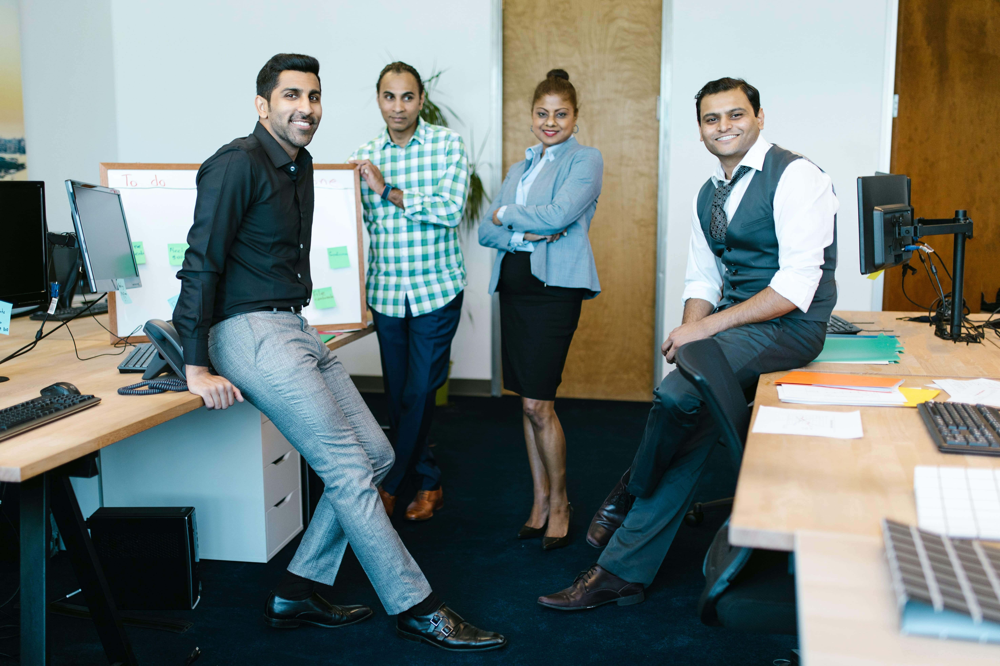

Karen Loaeza

- Nombre: Karen Jazmín Loaeza Jaramillo
- Nombre del Negocio: Green Therapy
- Ubicación: Salaverry #987, 203-A, Linda Vista, Gustavo A.Madero. C.P. 07300
- Profesión: Lic. En Comunicación Humana, Especialista en Fonoaudilogía y Rehabilitación neurológica
- Años en este negocio: 2 años
- Trabajos anteriores: Terapeuta en DIF Temixco, Terapeuta en SIRSALUD Y SEEIM S.A. DE C.V.
- Hijos: 1 Perrihija
- Pareja-Esposo: Pareja desde hace 5 años
- Mascotas: 1 Perrihija
- Ciudades donde has residido: Chilpancingo, Acapulco, Cuernavaca y cdmx
- ¿Por cuánto tiempo? : 17 años en guerrero, 6 años en Cuernavaca y 6 años en cdmx.
- Pasatiempos: Hacer ejercicio, ir al cine, conocer lugares de buna comida y café, visitar pueblos mágicos
- Una de las experiencias más enriquecedoras en tu vida: : Haber emprendido en pandemia y crear
Green Therapy.
- Metas: Posicionar a Green Therapy como una de las agencias de Servicios de salud más reconocidas en México. Concretar sucursal en Monterrey Nuevo León.
- Algo que nadie de los de aquí sepa sobre ti: De pequeña quería ser conductora de programas de
Televisión, siempre me gustó participar en todos los festivales y actividades deportivas de la escuela
- La clave de tu éxito: Persistir, Confiar en mi misma y nunca rendirme a pesar de las adversidades.

Habilidades
- Paciencia
- Comunicación
- Lenguaje
- Escucha Activa
- Memoria
- Capacidad de aprendizaje
- Amabilidad
- Pensamiento crítico
- Pensamiento abstracto
- Manejo de conflictos
- Adapatación
- Trabajo en equipo
- Planificación
Objetivos
- Crecer cartera de clientes de Green
Therapy
- Brindar el mejor servicio a nuestros
Clientes
- Apoyar a mis compañeros de
Negocio para encontrar su referencia
ideal
Redes
- Egresados de la Licenciatura en Terapia Física.
- Lic. En Fonoaudiología
- Lic. En terapia Ocuapacional
- Aseguradoras de Gastos Médicos Mayores (GNP, Seguros Monterrey NYL, Imbursa, Bupa,
Metlife, Axa, etc.)
- Clínicas Deportivas, Gimnasios, Clubs deportivos, Academia de baile o danza
Logros
- Emprendido en pandemia
- Ayudar a pacientes con daño neuorológico a recuperar su lenguaje oral y escrito, así como
Ayudar a habilitar su alimentación por vía oral
- Capacitarme constantemente en las diferentes ramas de la fisioterapia como son: Terapia cardio-
Respiratoria y rehabilitación neuro-sensorial y fonoaudilógica.
- Rehabilitar la deglución y fonación de mujer de 85 años que daban por perdida neurológicamente,
Dejarla comiendo y hablando al 100.
Intereses
- Hacer ejercicio, crossfit, funcional, correr, pesas
- Leer todo relacionado con área de la salud, así como romance y ciencia
Ficción.
- Amante del cine, conocer lugares de comida de diferentes países y regiones
- Conocer pueblito mágicos y lugares de buen café

Esfera de contactos
- Médicos
- Nutriólogos
- Psicólogos
- Deportistas
- Agentes de Seguros
- Entrenadores Deportivos
- Odontólogos
- Quiroprácticos
- Profesores de escuelas
- Spa
Últimos 10 clientes
- Adultos mayores
- Asegurados de GMM
- Médicos especialistas
- Deportistas
- Personas que hacen Home Office
- Personas con daño nerológico
- Personas con demencia y
Alzheimer
- Personas post operadas
- Personas post covid 19
- Lesiones de espalda y rodilla
Contactanos para más información